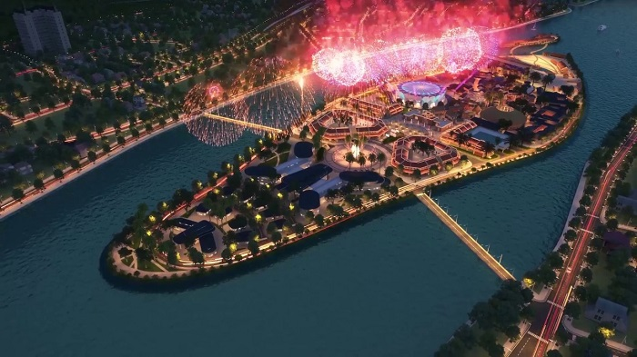
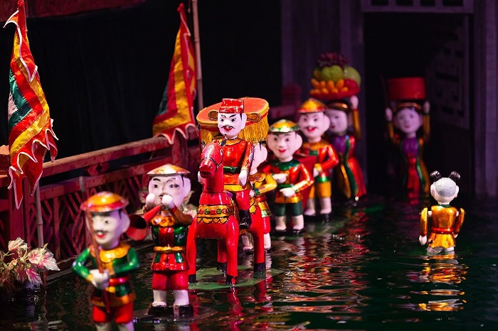
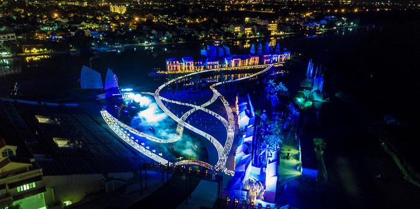
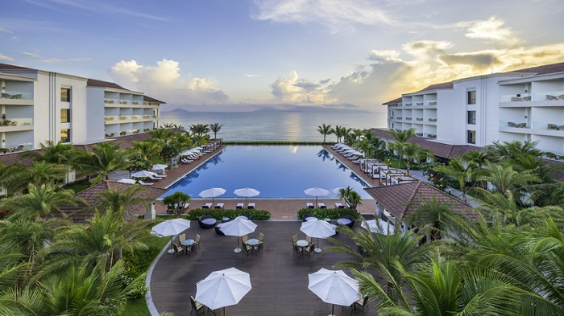

Show Ký ức Hội An: Ở đâu, giá vé và kinh nghiệm khi đi xem
Show Ký ức Hội An quy tụ 500 diễn viên diễn trên sân khấu ngoài trời với diện tích 25.000m2 cùng sự hỗ trợ của kỹ thuật âm thanh, ánh sáng tân tiến bậc nhất… đã đưa du khách đi từ bất ngờ này đến bất ngờ khác.
Mãn nhãn với bữa tiệc thị giác tại Ký ức Hội An (Ảnh: Sưu tầm)
Show ký ức Hội An là chương trình biểu diễn nghệ thuật thực cảnh lớn nhất thế giới. Show diễn với các tiết mục được dàn dựng công phu cùng sự có mặt của hàng trăm nghệ sĩ. Trực tiếp chiêm ngưỡng các tiết mục của show Ký ức Hội An đã trở thành một trong những trải nghiệm không thể thiếu của du khách thập phương khi du lịch Hội An.
1. Show Ký ức Hội An diễn ở đâu?
Địa chỉ show Ký ức Hội An: Công viên Ấn tượng Hội An, số 200 Nguyễn Tri Phương, phường Cẩm Nam, thành phố Hội An, tỉnh Quảng Nam Nếu bạn đang ở phố cổ Hội An thì chỉ mất khoảng 5-7 phút đi xe là tới được công viên này. Còn nếu bạn xuất phát từ Đà Nẵng thì sẽ mất khoảng 50 phút cho quãng đường gần 35km. Công viên nằm ở Cồn Hến - vị trí đắc địa bậc nhất giữa lòng trung tâm phố cổ Hội An.
Ấn Tượng Hội An là công viên văn hóa chủ đề lớn nhất của thành phố Hội An (Ảnh: Sưu tầm)
Không giống các công viên khác, Ấn Tượng Hội An là công viên văn hóa chủ đề lớn nhất của thành phố, gây ấn tượng mạnh với không gian sân khấu thực cảnh cùng các công trình kiến trúc giao thoa văn hóa Đông - Tây. Nơi đây mô phỏng miền di sản Hội An xưa - từng là thương cảng sầm uất, đầy màu sắc giao lưu văn hóa.
2. Giá vé show Ký ức Hội An
Lịch show Ký ức Hội An: công diễn 20:00 - 21:00 các ngày thứ 6, thứ 7 hàng tuần
Show Ký ức Hội An giá vé từ 600.000 - 1.000.000 VNĐ/vé tùy vị trí ghế. Trẻ em dưới 1.4m đi kèm người lớn được miễn phí vé show Ký ức Hội An. Du khách nên đặt mua vé show Ký ức Hội An trước để được đặt trước chỗ ngồi phù hợp nhất.
Miễn phí vé vào công viên và xem các minishow
Sơ đồ chỗ ngồi tại show Ký ức Hội An (Ảnh: Sưu tầm)
Gần sân khấu nhất và ở các vị trí 2 bên đó là hàng ECO với 2200 ghế. Đây là hàng ghế rất phù hợp với du khách muốn xem cận cảnh và muốn có giá vé tiết kiệm. Tiếp ngay sau đó là hàng ghế giữa - hàng HIGH với 1000 ghế. Đây là hàng ghế tối ưu vì vừa có thể xem rõ các chi tiết của màn diễn vừa có thể xem bao quát toàn bộ sân khấu. Đặc biệt, hàng ghế có vị trí cao nhất, đẹp nhất, thuận tiện nhất để bắt trọn mọi khoảnh khắc của các tiết mục đó là hàng VIP chỉ với 100 ghế.
Múa rối nước Hội An - nét văn hóa dân gian cổ xưa (Ảnh: Sưu tầm)
Không chỉ được chiêm ngưỡng các màn biểu diễn đặc sắc của show Ký ức Hội An, du khách khi đến với Ấn tượng Hội An còn được thưởng thức những tiết mục biểu diễn ngắn (minishow) mang đậm nét văn hóa dân gian cổ xưa như múa rối nước Hội An, Bà Chúa Tằm Tang…
3. Điều gì giúp Ký ức Hội An là show diễn đẹp nhất thế giới?
Ký ức Hội An là show diễn thực cảnh ngoài trời đầu tiên, lớn nhất ở Việt Nam mang đến cho khán giả “bữa tiệc thị giác” có 1-0-2. Sân khấu khổng lồ 25.000m2, chiều dài lên đến gần 1km, hệ thống âm thanh, ánh sáng ngoài trời đẳng cấp quốc tế. Đến nay show diễn đã thu hút hơn 1.000.000 người xem.
Tất cả đã tạo nên một Ký ức Hội An - chương trình giải trí đầu tiên tại Việt Nam được tổ chức Guinness ghi nhận kỷ lục là chương trình nghệ thuật thường nhật có sân khấu biểu diễn ngoài trời lớn nhất và có số lượng diễn viên đông nhất.
Ký ức Hội An “ghi điểm” với sân khấu khổng lồ 25.000m2 (Ảnh: Sưu tầm)
4. Nội dung show Ký ức Hội An
Show Ký ức Hội An giống như một triển lãm nghệ thuật với quy mô hoành tráng, sử dụng áo dài Việt Nam làm ngôn ngữ chính để kể câu chuyện về Hội An 400 năm trước. Show gồm 5 tiết mục với 5 chủ đề khác nhau.
- Màn 1: Sinh mệnh
- Màn 2: Đám cưới
- Màn 3: Đèn và Biển
- Màn 4: Bến bờ
- Màn 5: Áo dài
Áo dài là màn diễn tôn vinh vẻ đẹp tà áo dài truyền thống của Việt Nam (Ảnh: Sưu tầm)
Thưởng thức màn diễn Áo dài, du khách sẽ mãn nhãn trước những điệu múa dân tộc đặc sắc, chiêm ngưỡng vẻ đẹp của người phụ nữ Việt Nam qua tà áo dài trắng thân thương. Bên dòng sông Hoài, những điển tích hùng tráng lịch sử, hoạt động sinh hoạt thân quen của người dân, nét vàng son của cảng thị hay phố Hội nhộn nhịp... đều được Ký ức Hội An tái hiện lại đầy màu sắc của nghệ thuật và giàu cảm xúc.
5. Kinh nghiệm trước khi đi xem show Ký ức Hội An
Trước khi đi xem show Ký ức Hội An, du khách cần nắm rõ một số thông tin như:
Theo quy định của ban tổ chức show diễn, du khách không được quay phim, chụp hình trong quá trình xem.
Với xe từ 16 chỗ trở xuống hoàn toàn có thể di chuyển vào công viên, nếu đoàn du khách đi xe lớn hơn sẽ được đón tại bến thuyền 59 Trần Quang Khải
Show Ký ức Hội An chủ yếu là dùng ngôn ngữ hình ảnh, rất ít lời thoại (Ảnh: Sưu tầm)
Theo show Ký ức Hội An review thì đây là show không dùng quá nhiều lời thoại, nội dung tiếng Anh được hiển thị trên màn hình phụ đề giúp khán giả hiểu được đầy đủ nội dung. Du khách nước ngoài nên chọn những ghế bên phải để theo dõi phụ đề dễ dàng hơn.
Sau khi xem xong show Ký ức Hội An, du khách có thể trải nghiệm các hoạt động thú vị tại chợ đêm Hội An. Tại đây, du khách sẽ được hòa mình vào không gian mua sắm sầm uất, thưởng thức nhiều món ăn mang đậm màu sắc vùng miền.
Để thuận tiện cho việc xem show Hội An, du khách nên chọn Vinpearl Resort & Spa Hội An hoặc Vinpearl Resort & Golf Nam Hội An là địa điểm lưu trú. Đây là những khách sạn/resort có vị trí rất gần trung tâm phố cổ Hội An, thuận tiện cho việc di chuyển xem show, thưởng thức nhiều đặc sản Hội An và đặc biệt dễ dàng kết nối với các điểm du lịch khác như VinWonders Nam Hội An, bãi biển Cửa Đại, vườn thú du khảo trên sông River Safari,…
View biển Cửa Đại cực “chill” tại Vinpearl Resort & Spa Hội An
Đặc biệt Vinpearl đang áp dụng chương trình MIỄN PHÍ đăng ký thẻ hội viên Pearl Club với các đặc quyền ưu đãi vô cùng hấp dẫn:
Giảm thêm 5% trên giá phòng tốt nhất
Giảm thêm 5% trên giá phòng tốt nhất
Tích lũy nâng hạng và hàng loạt các ưu đãi khác